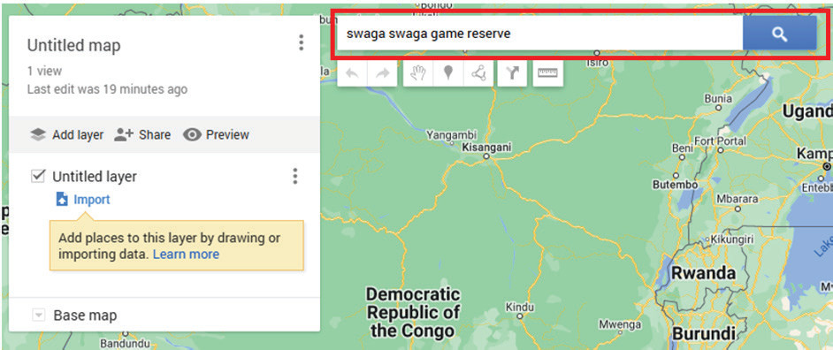

2. Go to the ‘Create a New Map’ menu in ‘Google My Maps’, as shown in Figure 8

Figure 8: Menu for creating maps in Google My Maps
3. Search for the name of the location you need on the map, such as parks, reserves, villages, wards, districts, or regions.For example, type “Swaga Swaga Game Reserve,” as shown in Figure 9.

Figure 9: Google My Maps interface for searching geographical area or location
4. Click the search button to display Swaga Swaga Game Reserve, as shown in Figure 10.Once Swaga Swaga Game Reserve is displayed, you can draw its boundary.To start drawing the boundary, click “Draw line” (1) and then “Add line or shapes” (2), as shown in Figure 10.